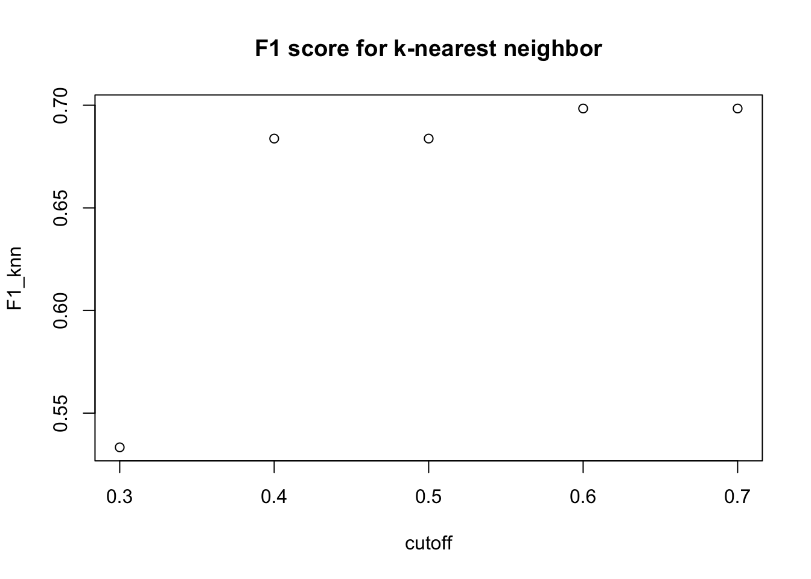

Higher accuracy in disease prediction would largely help patients and doctors. In this project, we aim to analyze whether machine learning algorithms would outperform the traditional logistic regression in a classification problem under the context of predicting disease. We will look at the chronic kidney disease data set from the UCI machine learning repository, and investigate which model out of the traditional statistical model and machine learning models could best classify the development of chronic kidney disease.
The data set has 25 variables. One of these variables is the binary outcome variable recording whether the patient develops the kidney disease. The rest of the variables record the clinical information of the patients such as age, blood pressure, specific gravity, albumin, sugar, red blood cells, pus cell and bacteria. The data set contains both quantitative variables such as age, blood pressure, and sodium, and qualitative data such as albumin, sugar, hypertension. The data has missing values. To deal with the missing values, we impute the missing values with the mean of each variable excluding the missing values for quantitative variables, and the lowest or reference category for categorical variables.
From the plot, we see that age and the outcome might have a nonlinear relationship. Therefore, we calculate the pearson correlation to see the strength of linear relationship between each variable and the outcome.
## pearson correlation with outcome p values
## age 0.21787598 1.098513e-05
## bp 0.29136656 2.877686e-09
## sg -0.65970612 0.000000e+00
## al 0.52337662 0.000000e+00
## su 0.26625071 6.436108e-08
## rbc 0.28870505 4.059777e-09
## pc 0.35700856 1.814104e-13
## pcc 0.23748477 1.557398e-06
## ba 0.19087904 1.225307e-04
## bgr 0.39005523 4.440892e-16
## bu 0.37981834 3.552714e-15
## sc 0.29697131 1.377874e-09
## sod -0.33828027 3.642864e-12
## pot 0.07699492 1.242047e-01
## hemo -0.72217253 0.000000e+00
## pcv -0.68935489 0.000000e+00
## wbcc 0.21059989 2.171006e-05
## rbcc -0.58231038 0.000000e+00
## htn 0.57113322 0.000000e+00
## dm 0.52126341 0.000000e+00
## cad 0.24115247 1.059976e-06
## appet -0.35747752 1.678657e-13
## pe 0.37010498 1.976197e-14
## ane 0.31798693 7.537082e-11
## class 1.00000000 NAFrom the table, we see that the absolute values of the pearson correlation mostly do not exceed 0.5, which means that most of the variables appear to have a weak linear correlation with the outcome. However, we see that their corresponding p-values are small, which indicates that the variables are associated with the outcome. Therefore, we need to consider flexible models which could capture complex and nonlinear relationship between predictors and the outcome. In particular, we will consider random forests, naive bayes, decision tree, and k-nearest neighbors.
In order to investigate whether machine learning algorithms could capture more complex relationships between predictors and outcome, we will apply flexible models including classification trees, random forests, k-nearest neighbors, and naive bayes. First, we will train each algorithm with fixed parameters using only one train and test set for a reference purpose. We will also train a logistic regression in order to establish a comparison on the performance between the traditional statistical methods and the machine learning algorithms. For random forests, we set the number of trees trained to be 100, and for k-nearest neighbors, we set the number of neighborhood to be 5.
## Accuracy Sensitivity Specificity
## metric_logit 0.9008264 0.9361702 0.8783784
## metric_rf 0.9752066 0.9361702 1.0000000
## metric_tree 0.9586777 0.9148936 0.9864865
## metric_nb 0.9090909 0.9574468 0.8783784
## metric_knn 0.6942149 0.8510638 0.5945946From the table, random forests and classification trees have higher accuracy than logistic regression, but k-nearest neighbors have lower accuracy than logistic regression, and the accuracy of naive bayes is close to that of logistic regression. However, we see that in terms of sensitivity, naive bayes has the highest value, followed by logistic regression and random forests, then classification trees and k-nearest neighbors. In addition, in terms of specificity, random forests and classification trees have the two highest values, followed by logistic regression and naive bayes, then k-nearest neighbors. In general, the sensitivity is higher than the specificity rate for three out of five algorithms.
Now, let’s look at their F1 score against different cut-off thresholds for each algorithm.
We see that for logistic regression, different cut-offs do not generally influence the F1 score.
For random forests, the cut-off values from 0.3 to 0.6 have the same F1 score, and the cut-off value of 0.7 achieves the highest F1 score for random forests.
We see that for classification trees, different cut-offs do not generally influence the F1 score.
For naive bayes, a smaller cut-off value has a higher F1 score, and the highest F1 score occurs when the cut-off value is 0.3.

For k-nearest neighbors, we see there is a sudden increase of F1 score from cut-off value of 0.3 to cut-off value of 0.4.
Nevertheless, these results are only based on a single cross-validation set with fixed parameters. However, the performance of these algorithms might differ with different parameters. Therefore, we will implement a common practice of parameter tuning using a 10-fold cross-validation on the train set and record the best tuned model. We will analyze whether parameter tuning improves the performance for each algorithm. Specifically, we will compare the tuning parameters with the accuracy. Since there is no tuning parameter for logistic regression, we will only train the model with a 10-fold cross-validation.
For random forests, we will tune the number of trees trained first. We will train a random forests model for 10 different numbers of trees with a 10-fold cross-validation and we keep the number of variables randomly selected for placing splits as three.
From the graph, we see that the accuracy is greatly boosted from training only one tree to 101 trees, and the accuracy stays approximately the same for even larger number of trees trained. Having a large number of trees trained helps the accuracy of prediction.
Next, we will also look at the influence of number of variables randomly selected as predictors on the accuracy of prediction. In this tuning process, we trained random forests for 8 different number of variables randomly selected as predictors with a 10-fold cross-validation and plot them against the accuracy.
From the plot, we see that having three randomly selected predictors has the highest accuracy. However, the accuracy across different number of randomly selected predictors do not vary much and are generally close to each other. With contrast to number of trees trained, the accuracy of prediction is more sensitive to a small change in the number of randomly selected predictors.
Next, we will tune the classification tree using the complexity parameter ranging from 0 to 0.1 with a 10-fold cross-validation and plot them against the accuracy.
From the graph, we see that the highest accuracy occurs when the complexity parameter is 0.02. The accuracy generally decreases as complexity parameter becomes larger. A larger complexity parameter will generally result in a smaller number of nodes. This explains the general decreasing pattern in accuracy with complexity parameter increasing.
Now, we will tune the number of neighbors for k-nearest neighbors with a 10-fold cross-validation and plot them against the accuracy.
From the graph, we see that the highest accuracy occurs for one number of neighbor. This might be due to that the predictors in the data set have a wide and varying range. We also see that the overall accuracy of k-nearest neighbor is low even though the accuracy is higher when number of neighbor is one.
We will tune the bandwidth or flexibility of the kernel density and the laplace smoothing correction for naive bayes using a 10-fold cross-validation and plot them against the accuracy.
From the graph, we see that the accuracy is highest when bandwidth adjustment and laplace correction both equal to 1.
Finally, we train a logistic regression with a 10-fold cross-validation since there is no tuning parameter for logistic regression.
## Accuracy
## random forest 0.9785532
## tree 0.9322386
## knn 0.7600666
## naive bayes 0.9361978
## logit 0.9504926Now, let’s compare the best tuned models. From the table, we see that the best tuned model for random forests has the highest accuracy, followed by the logistic regression. Classification tree and naive bayes have similar accuracy, and the k-nearest neighbors have the lowest accuracy.
Next, let’s use the best tuned parameter for each algorithm to train the corresponding algorithm on the train set and evaluated it using the test set, and we will compare the performances of the best tuned models with the models using fixed parameters that we trained previously.
## Accuracy Sensitivity Specificity
## metric_logit 0.9008264 0.9361702 0.8783784
## metric_rf_bestmodel 0.9752066 0.9361702 1.0000000
## metric_tree_bestmodel 0.9586777 0.9148936 0.9864865
## metric_nb_bestmodel 0.9504132 0.9574468 0.9459459
## metric_knn_bestmodel 0.6611570 0.7872340 0.5810811From the above table, we see that after training the best tuned model, random forests have the highest accuracy, followed by classification tree and naive bayes, then logistic regression, and k-nearest neighbors have the lowest accuracy. Compared to the performance of each algorithm with fixed parameters, we see that random forests and classification tree have the same performance, and naive bayes increases its accuracy. However, k-nearest neighbors decreases accuracy by parameter tuning, and it is still the lowest in terms of accuracy, which underperforms logistic regression. In general, by tuning parameter, the machine learning algorithms random forests, naive bayes, and classification trees perform at least no worse than the traditional logistic regression.
In this project, we aim to compare the performance of nonparametric machine learning algorithms and parametric logistic regression under a classification problem for predicting diseases and try to determine which machine learning model performs the best. In particular, we used random forests, classification tree, k-nearest neighbors, and naive bayes to compare with the logistic regression. In general, we see that parameter tuning helps improve the performance of most of machine learning algorithms. After tuning the parameter, most machine learning algorithms except the k-nearest neighbors performs better than the logistic regression. Therefore, the nonparametric approaches using machine learning algorithms outperform the logistic regression for classifying the kidney disease in this data set, and the best predictive model in terms of accuracy is random forests.
Therefore, the analysis in this project was successful as we see that there was an improvement in accuracy in predicting the kidney disease using machine learning algorithms implemented in this project except k-nearest neighbors. However, because of the limitation of time, one should also consider the variance of the performance metrics including accuracy, sensitivity, and specificity by repeatedly splitting the data into test and train set and look at the variation among the performance metrics calculated for each data splitting. Another limitation of this project is that the project only considered the performance metrics of the machine learning algorithms, but did not analyze the time that each machine learning algorithm took to perform the training and prediction and compare it with time taken for training logistic regression.
UCI Machine Learning Repository: Chronic_kidney_disease Data Set, https://archive.ics.uci.edu/ml/datasets/Chronic_Kidney_Disease.
Dua, D. and Graff, C. (2019). UCI Machine Learning Repository [http://archive.ics.uci.edu/ml]. Irvine, CA: University of California, School of Information and Computer Science.
Irizarry, Rafael A. Introduction to Data Science: Data Analysis and Prediction Algorithms with R. CRC, 2020.